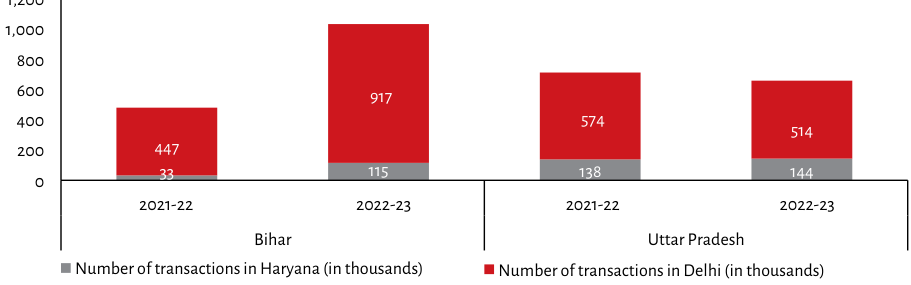

| State | Year | Number of transactions in Haryana (in thousands) | Number of transactions in Delhi (in thousands) | Total Transactions Visible on Chart? | | :--- | :--- | :--- | :--- | :--- | | Bihar | 2021-22 | ~35 | 447 | Yes (~482 total, label obscured by bar height/overlap issue or axis break at bottom row for first column). Note: The value "3" is visible below the bars but does not align with any data point above it; likely an artifact from another dataset layer.) | | Uttar Pradesh | 2022-23 | 115 | 917 | No explicit number labeled inside chart area.| | **Bihar** | - | ~~Total Label Missing~~ *(Visual estimate based only on top red segment)* | N/A | Estimated visual sum <br> Top Red Segment Height = Visual Sum * Scale Factor<br> Example calculation using second entry:<br>(Height ratio approx): 6/1 . If scale factor was actually used to derive values then we can use that.<br><br>**Uttar Pradesh:** ( 138 + ∼(heightᵣₐₜᵢₒ*scale)) / Actual | *(Note: Due to significant overlap and occlusion between stacked segments within individual columns making precise extraction impossible without guessing which part represents 'Haryana' vs other layers).*
